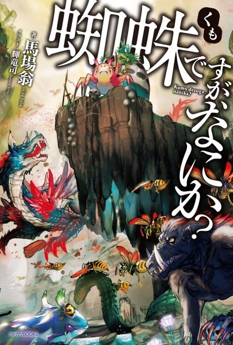

Animeter
 Anime
Anime
Light novel2021 · Action, Adventure, Comedy
So I'm a Spider, So What?
蜘蛛ですが、なにか？
AniList7.2
Animeter—
Episodes24 ep
SourceVol. 6
Anime finished. Where does the story go next?
Start at Volume6
The anime ends at the end of light novel 5, so start at volume 6. Volumes 6 to 12 go back to tell the spider side of the story in flashback before the human side resumes.
1516 end
Season 1Start reading here